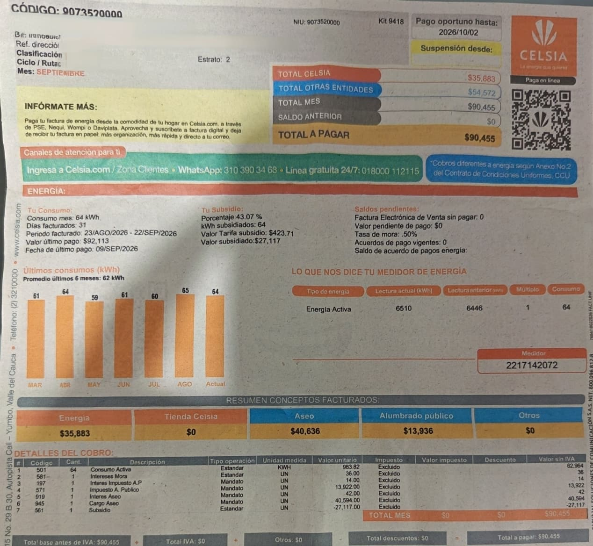

Mi factura de septiembre
Factura del periodo facturado del 23 de agosto al 22 de septiembre de 2026 (31 días). El total a pagar fue de $90.455 COP.

Datos importantes de la factura:
- Consumo del mes: 64 kWh (medidor 2217142072: 6.510 − 6.446 = 64 kWh).
- Total energía: $35.883 · Total aseo: $40.636 · Alumbrado público: $13.936.
- Valor unitario de la energía: 983,82 COP/kWh.
- Subsidio: 43,07% (27.117 COP descontados, estrato 2).
- Pago oportuno hasta: 2 de octubre de 2026.
Historial de consumo de la factura
| Mes | kWh | Valor estimado (COP) |
|---|---|---|
| Marzo | 61 | 60.013 |
| Abril | 64 | 62.964 |
| Mayo | 59 | 58.045 |
| Junio | 61 | 60.013 |
| Julio | 60 | 59.029 |
| Agosto | 65 | 63.948 |
| Septiembre (actual) | 64 | 62.964 |
| Promedio de los 6 meses | 62 | 60.997 |
El consumo real de la casa es muy estable: siempre está entre 59 y 65 kWh al mes. En septiembre el total pagado fue de $90.455, valor que incluye además de la energía el servicio de aseo ($40.636) y el alumbrado público ($13.936). En agosto se habían pagado $92.113.
Comparación: proyección de equipos.html vs. factura
| Dato | kWh al mes |
|---|---|
| Proyección de equipos (75,00 kWh por semana) | 325 |
| Consumo real de la factura (septiembre) | 64 |
| Diferencia | 261 kWh de más en la proyección |
La proyección de equipos da 325 kWh al mes (75,00 kWh por semana × 52 semanas ÷ 12 meses), es decir, casi 5 veces más que los 64 kWh que trae la factura. La diferencia se explica sobre todo por la estufa / horno Haceb: en la tabla se asumió que funciona a su potencia máxima de 4.250 W durante 2,11 horas todos los días, y eso solo produce 62,77 kWh por semana (más del 80% de la proyección). Sin embargo, el termostato de la estufa enciende y apaga el resistente, así que no consume la potencia máxima de forma continua, y además no se usa todos los días. Por eso la proyección quedó muy por encima del consumo real medido por el medidor (6.510 − 6.446 = 64 kWh en 31 días), que además coincide con el promedio de los últimos 6 meses de 62 kWh.
Recomendaciones de ahorro
- Usar la estufa de forma más eficiente. Según la tabla de equipos, la estufa / horno representa más del 80% del consumo estimado (62,77 kWh de 75,00 por semana). Cocinar con olla a presión, tapar los ollas y no precalentar el horno reduce las horas de uso y el gasto.
- Cuidar la nevera. Es el segundo equipo que más consume porque está encendida 24 horas (9,80 kWh por semana). No debe entrar comida caliente, hay que revisar que las gomas cierren bien y conviene mantenerla entre 3 °C y 5 °C.
- Desconectar la impresora cuando no se use. Aunque solo consume 12 W, la impresora Epson está en modo de espera gran parte del día; desconectarla del enchufe evita ese gasto fantasma todos los días.
- Vigilar la factura mensualmente. El promedio de los últimos 6 meses es de 62 kWh. Si un mes se pasa de ese valor conviene revisar qué equipo aumentó el consumo. Como el estrato 2 recibe un subsidio del 43,07% ($27.117 en septiembre), mantener un consumo bajo ayuda a seguir dentro del rango subsidiado y a pagar menos.